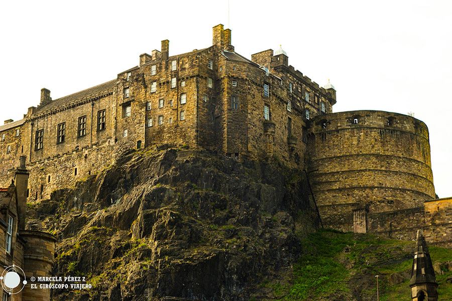
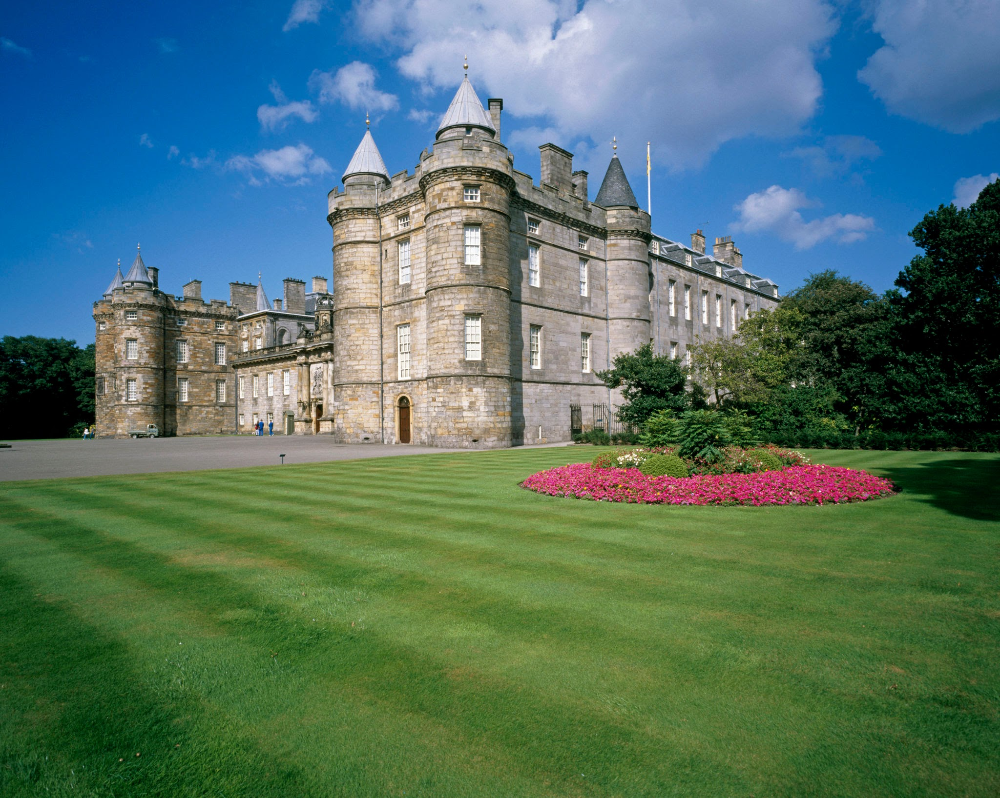
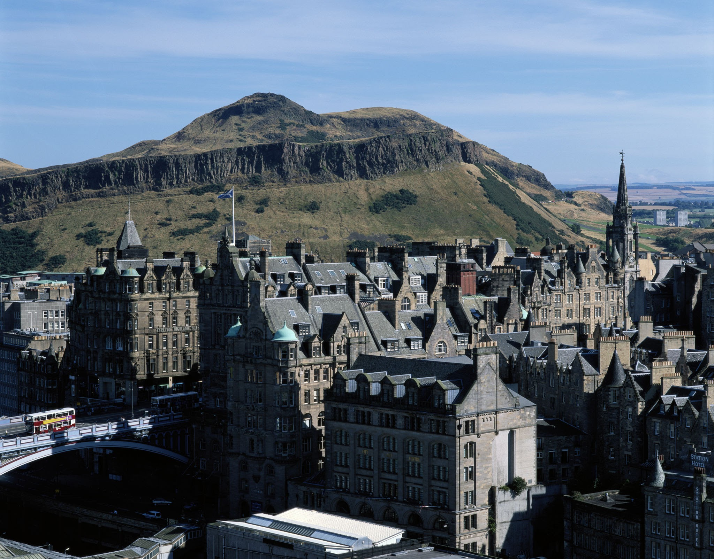

It is the capital and a council of Scotland (United Kingdom). It is the second largest city in Scotland after Glasgow. Located on the east coast of Scotland, on the banks of the River Forth and in the local unitary authority of the City of Edinburgh, it is the capital of Scotland since 1437 and seat of the Scottish government. It was one of the most important education and culture during the Enlightenment thanks to the University of Edinburgh. Its districts The Old Town Old Town and The New Town New Town were designated a World Heritage Site by Unesco in 1995.4 According to the 2011 census it has a total population of 459,366 inhabitants.
Edinburgh is famous for its International Festival, the world's largest live performance festival, and others festivals developed in summer more or less simultaneously, most of which are grouped under the Edinburgh Festival denomination. During the festival the population of the city doubles. Edinburgh is the Second most visited city in the United Kingdom, after London, with approximately 13 million tourists a year.
It is an ancient fortress built on a rock of volcanic origin located in the center of the city of Edinburgh. It has been used for military purposes since the 12th century, being intended for civilian use only in very recent. It is located at the top of Castlehill Street, one of the four streets that make up the Royal Mile. The castle is open to visitors and is managed by the specialized agency Historic Scotland. It is the most visited paid tourist attraction in Scotland. Three of its sides are protected by steep cliffs, and access to the castle is limited to a steep street on the side eastern castle. In the past there was an artificial lake in its northern area.

The Palace of Holyroodhouse, better known as Holyrood Palace, founded as a monastery by David I in 1128, It has served as the primary residence of the Scottish kings and queens since the 15th century.
The Palace of Holyroodhouse is the official residence of Queen Elizabeth II in Scotland, where she usually spends a season in early summer. Holyrood is the Anglicized word from Scottish Haly Ruid. The palace is full of secret passageways, tunnels, and basements

It is the main peak of a group of hills that make up most of Holyrood Park, a natural space with a Highland-like landscape near central Edinburgh, about a mile east of Edinburgh Castle. The hills rise above the city to a height of 251 m and provide a view panoramic of the city; It is also very easy to climb, which makes it a very popular ride.
Although you can ascend from almost any direction, the easiest way is from the east, with gentle slopes grassy over the Dunsapie Loch.
It is common to think that his name is a derivation of the legends of King Arthur, as they appear in the Gododdin. However, it has also been suggested that it may be a corruption of Archer's Seat, given that this rock was a significant point in the defense of the city.
Haddock is a popular choice of fish, commonly associated with the popular British dish of ‘fish and chips’. Haddock is a white fleshed fish, often compared to cod in flavour, that can be purchased smoked or unsmoked, dyed or undyed. The smoked haddock coloured garish saffron has usually been ‘smoked’ by flavourings or by modern methods, then dyed. Traditional, undyed smoked haddock is naturally off-white or pale yellow.
If you want to learn how to prepare it, I leave you a link to know how to do it
Kippers are cold-smoked herring fish, and they are traditionally served as a protein at breakfast in the UK. You can buy them fresh or frozen from most supermarkets, though in the US, you're more likely to find them in a can. Canned kippers don't require cooking, but fresh or frozen kippers do. You can poach them in a pan or use the more traditional method of poaching them in a jug. You can also grill or broil them in the oven, and sautéing is also a good option.
If you want to learn how to prepare it, I leave you a link to know how to do it
It is a very traditional kind of soup in Scottish cuisine. The main ingredients that this broth contains are barley grains cooked in beef or lamb, the inclusion of vegetables such as carrots, turnips and kohlrabi (a very typical element in northern European soups), cabbage and leeks. The proportions and ingredients may vary depending on the local recipe and the tastes of the cook.
If you want to learn how to prepare it, I leave you a link to know how to do it